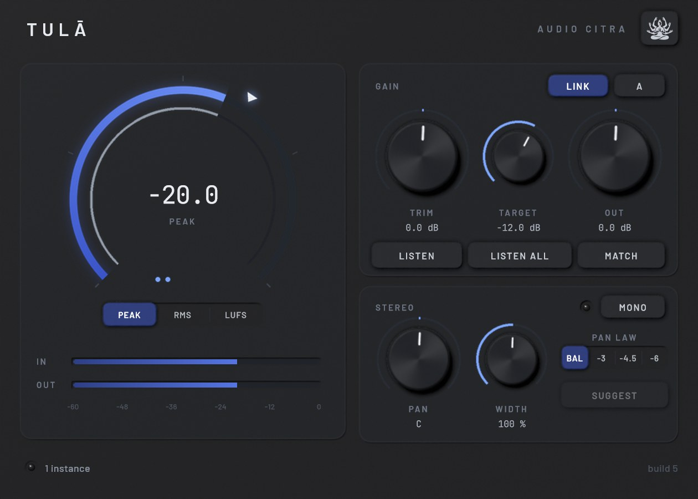

Every track, in balance.
Tulā means scale, as in the kind that balances. It's the little thing I put on every track first: it listens, sets your gain to a target, matches levels so your A/B is honest, and handles pan and width.

Studio skin · straight from the plugin
Small box, does the boring stuff right.
Listen
Pick Peak, RMS or LUFS and a Target, hit Listen and play the loudest part. It waits for audio, listens for six seconds and sets Trim for you. LUFS is proper BS.1770, gated and K-weighted, and Peak ignores that one stray click.
Peak · RMS · LUFS · 6 sListen All
Start it from any track and every Tulā in the session listens at once and sets its own gain. One pass and your whole session is staged.. that one still makes me happy.
Every linked instanceLink, Match and A/B
With Link on, Out moves opposite to Trim so the track never gets louder on you. Match sets Out so what comes out is as loud as what went in, and A/B flips to the dry signal at that same level. Louder always sounds better, so I took that off the table.
Link · Match · A/BPan and width
Pan with four laws: Balance (the default, so inserting it changes nothing), -3, -4.5 and -6 dB. Width goes 0 to 200 % without touching the mono sum, and Mono lets you check the fold-down, with a lamp that shows how much you lose.
4 pan laws · width · mono checkFive skins
Studio, Paper, Rack, Console and Citra, all from the lotus menu. They are not recolours: each one has its own shape, layout, type and meter, from a ring meter to a 2U rack with twin VUs to a lotus that lights petal by petal. Resize it however you like.
5 skins · 5 shapes · resizableGrab it and turn it around.
Every skin is built as a real little unit. Drag to spin it, scroll to get close.
I'd rather show you than tell you.
I rendered every one of these offline through the plugin itself at 48 kHz. The settings are under each plot, so you can check my work.
Pick a finish.
These are straight from the plugin, no mockups. Click around.. I spent way too long on some of these.
Want to try Tulā?
Early access (beta): it works and I support it, but I'm still finishing it. Every update until 1.0 is free.
VST3 · Windows 64-bit · signed updates right inside the plugin